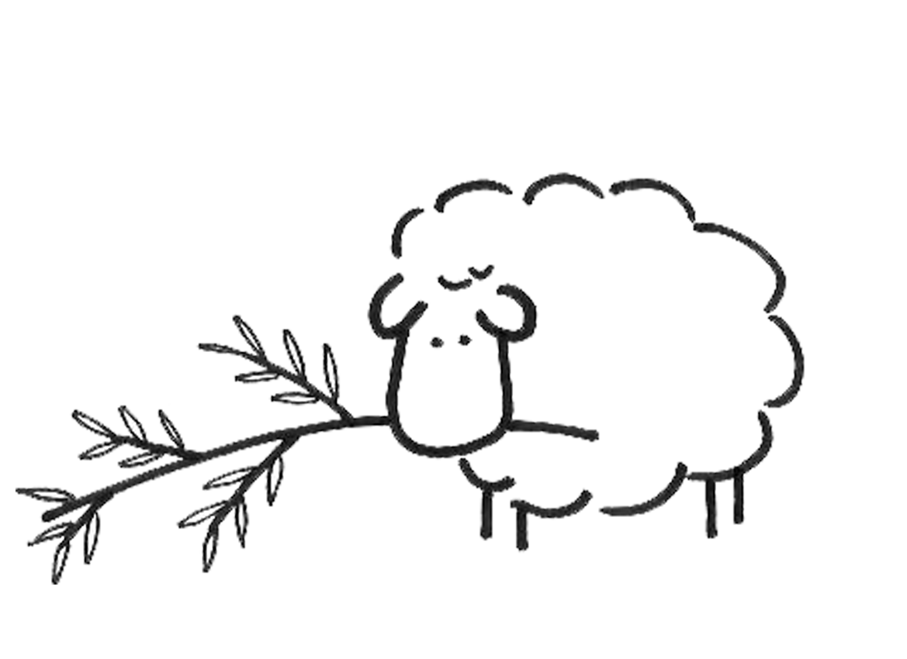

(scroll down)

Jaqi + Ben's Wedding
Saturday, August 18th, 2018 at 3:00pm
Open Sky Retreat Space / Sussman Farms
4500 Bloomfield Road, Sebastopol CA 95472
RSVP Here!
Weekend Festivity Schedule
Lodging and Carpooling
Things to do in the area